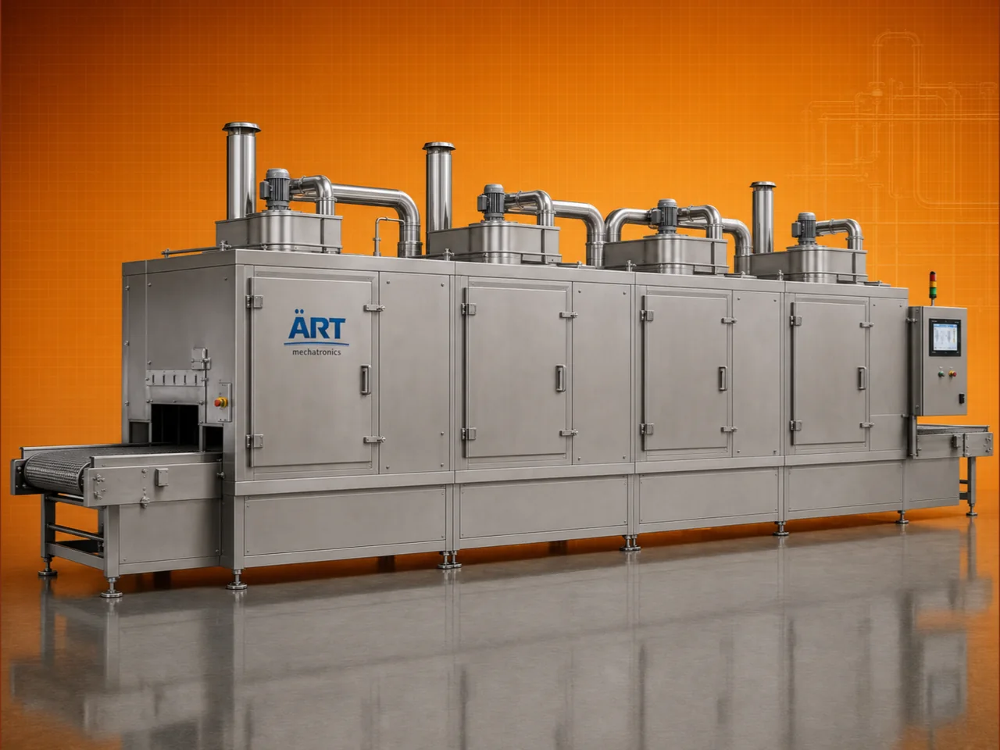

Continuous Conveyor Type Tunnel Dryer Machine (Industrial Continuous Drying System)
A Continuous Conveyor Type Tunnel Dryer Machine, also known as a Tunnel Dryer or Conveyor Dryer, is an advanced industrial drying system designed for continuous drying of products using a moving conveyor belt inside a temperature-controlled tunnel.

About the Continuous Conveyor, Tunnel Dryer
Unlike batch dryers, tunnel dryers operate in a fully continuous mode, allowing materials to move through different drying zones, ensuring uniform moisture removal, high production capacity, and consistent product quality.
Tunnel dryers are widely used in industries such as food processing, pharmaceuticals, chemicals, nutraceuticals, agro processing, and minerals, where large-scale drying with automation and efficiency is required.
ART Mechatronics offers high-performance conveyor tunnel dryers, engineered for uniform drying, energy efficiency, and reliable industrial operation.
One machine, many names
Buyers search for this equipment under many terms — we manufacture all of them:
Working Principle of Tunnel Dryer
Types of Tunnel Dryers
Industries Using Tunnel Dryer
🍃 Food Processing Industry
- Fruits, vegetables
- Snacks and food products
💊 Pharmaceutical Industry
- Granules
- Tablets
⚗️ Chemical Industry
- Chemicals
- Powders
🌿 Nutraceutical Industry
- Health products
🌾 Agro Processing Industry
- Seeds
- Grains
🏗️ Industrial Manufacturing
- Bulk material drying
Features & Advantages
- Continuous drying process
- High production capacity
- Uniform moisture removal
- Automated operation
- Energy-efficient design
- Multi-zone temperature control
- Suitable for large-scale industries
Technical Highlights
- Capacity: High throughput (continuous)
- Drying Type: Hot air conveyor drying
- Heating Source: Electric / Gas / Steam
- Conveyor Type: Belt / Chain / Tray
- Construction: Mild Steel / Stainless Steel
- Control System: PLC-based (optional)
Turnkey Tunnel Dryer Solutions
ART Mechatronics offers:
- Complete tunnel dryer system design
- Conveyor and airflow optimization
- Heating system integration
- Installation & commissioning
- After-sales service & AMC
Why Choose Art Mechatronics
- Expertise in continuous drying systems
- Customized solutions for high-capacity plants
- High-performance and durable machines
- Energy-efficient and automated systems
- Proven performance across industries
Applications
- Food Processing Plants
- Pharmaceutical Manufacturing Units
- Chemical Processing Plants
- Agro Processing Units
- Industrial Manufacturing Units
Related Heating & Drying machines
Get pricing & specs for the Continuous Conveyor, Tunnel Dryer
Share the product, target capacity, current process and plant location. These details help our engineers discuss the right machine or line configuration.
One partner, from design to start-up
ART Mechatronics designs, manufactures, installs and commissions your Continuous Conveyor, Tunnel Dryer solution with regional presence in India, UAE and Thailand.